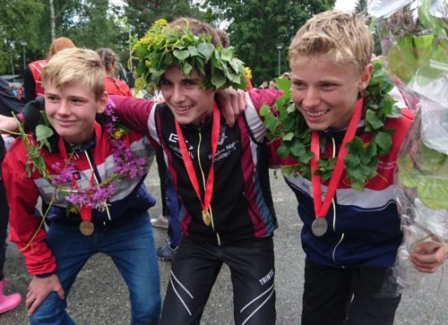

Life outside school
I am a cheerful, active, and curious person. I love meeting new people and working out regularly. In my free time I enjoy reading and learning new things, whether that is staying updated through news articles or diving into interesting topics like blockchain and AI-usage.
Most of my youth life has been dedicated to orientering where i have competed at the top level in Norway. I have also trained and competed in both cross-country skiing and biathlon. This taught me that hard work is neccesary for great results, but also how fun it is to be part of a community that has a drive for the same thing. This has also given me the oppertunity to travel both in Norway and Europe, which i to this day still enjoy. I still run and ski regularly and try to keep myself in shape to my best ability even if i do not compete anymore.
Besides trying my best to stay in shape, i play discgolf. Discgolf is a great and inclusive sport that i play with family and friends. Even if i do not compete at competitions i still enjoy seeing improvement and the friendly competition.
I think to succeed in life and be happy you need to find a good balance between work, exercise and free time. I find it important to have my focus on what i am doing right now. This means that working means working, and exercising means exercising. Friends and family is important to me and i try to keep up with everyone to my best ability.
